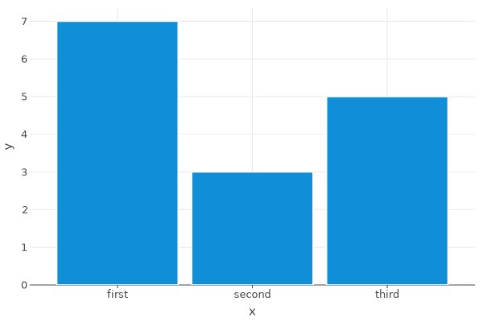
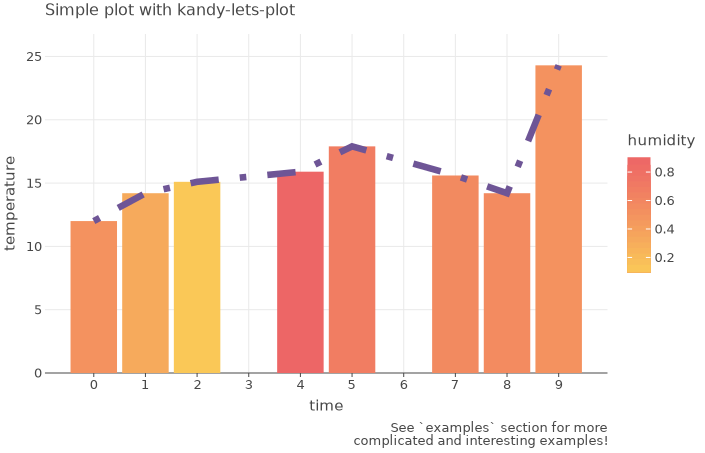
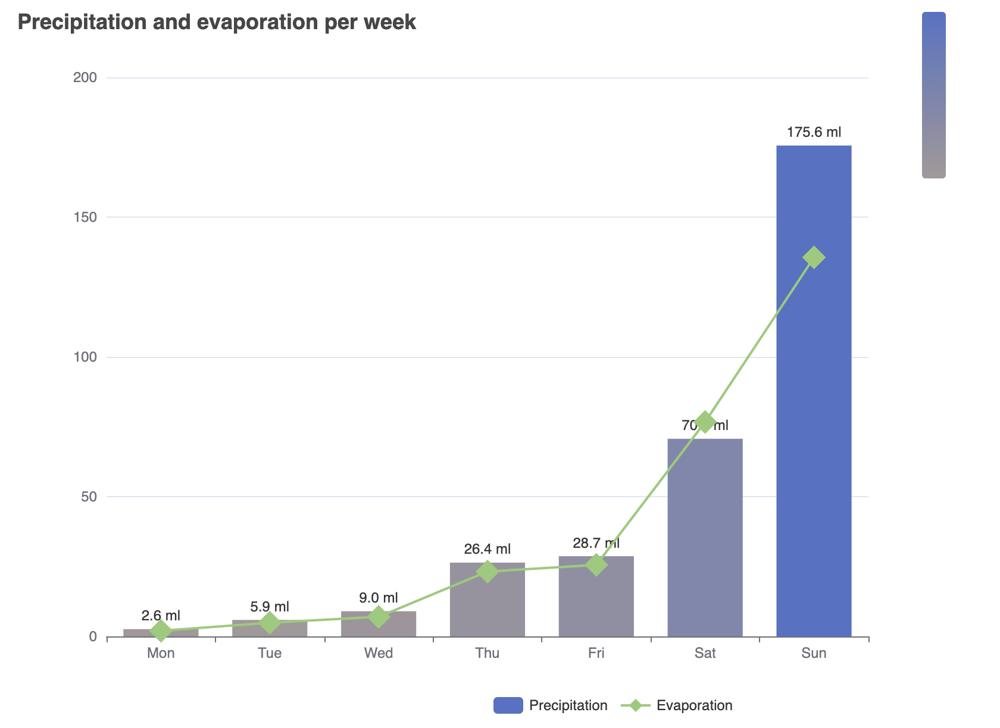

Kandy
Kandy is an open-source plotting library for Kotlin that provides a powerful and flexible DSL for creating graphs and utilizes various popular engines.
- Cross-platform compatibility — Works effortlessly within Kotlin notebooks on various platforms, including IntelliJ IDEA, Datalore, and Jupyter, as well as in standard Kotlin projects.
- Swing rendering — Features Swing rendering for outputs in the Kotlin Notebook plugin.
- Interactive Chart features — Includes interactive tooltips for charts rendered in HTML and Swing.
- Multiple format export — Allows charts to be saved in various formats like
svg,png,html,jpg/jpeg, andtiff. - Kotlin collections and DataFrame support — Seamlessly integrates with Kotlin collections and allows graph construction using Kotlin DataFrame, especially suitable for hierarchical dataframes.
- Type and null safety — Ensures type safety and Kotlin null safety.
Inspired by The Grammar of Graphics.
Quickstart
Inside Kotlin Notebook, Datalore or Jupyter with Kotlin Kernel:

For guidance on getting started, additional examples, and tutorials, please refer to our documentation.
Table of Contents
Overview
Kandy is a Kotlin library that provides a flexible and idiomatic DSL for creating various types of charts, leveraging different visualization libraries. The library aims to make it easy and quick for users to create both basic and complex charts with many parameters and settings, without the need for lengthy documentation. Depending on the task, users can choose from different engines for the perfect visualization.
Kandy integrates with Kotlin DataFrame,
another Kotlin library for working with data, allowing for a seamless transition from data processing to final
visualization.
Additionally,
integration with kandy-lets-plot in Kotlin Notebook
enables high-speed chart rendering and the ability to work with large amounts of data without delays or waiting.
The library comprises the following modules:
kandy-api— This module provides a simple-to-use API for creating charts.kandy-lets-plot— This module offers an implementation of the Lets-Plot library, which is based by Leland Wilkinson work The Grammar of Graphics and is a proven tool for creating visualizations.kandy-echarts— This module provides an implementation of the Apache ECharts library, which is a widely used tool for creating interactive visualizations.
Examples
Lets-Plot

You can get this example as a notebook, as Datalore notebook, or as a Kotlin project.
ECharts

You can get this example as a notebook, as a Datalore notebook, or as a Kotlin project.
More examples of working with the library can be found here.
Using Kandy
Kotlin Notebook, Datalore, Kotlin Jupyter Notebook
For more detailed instructions on how to get started with Kandy, refer to the Getting Started.
You can use Kandy in Kotlin-supported notebooks, namely in Kotlin Notebook, Datalore, and Kotlin Jupyter Notebook.
You can include all the necessary dependencies and imports in the notebook using line magic:
You can use %useLatestDescriptors
to get the latest stable version without updating the Kotlin kernel or manually specify the version:
or
Refer to the documentation on "line magic" for details.
Available descriptors:
kandy— includes an API, implementation of Lets-Plot, DSL features, and DataFrame supportkandy-echarts— includes an API, implementation of ECharts, DSL features, and DataFrame support
Gradle
Add dependencies (you can also add other modules that you need):
Make sure that you have mavenCentral() in the list of repositories:
Contributing
Read the Contributing Guidelines.
Code of Conduct
This project and the corresponding community are governed by the JetBrains Open Source and Community Code of Conduct. Please make sure you read it.
License
Kandy is licensed under the Apache 2.0 License.